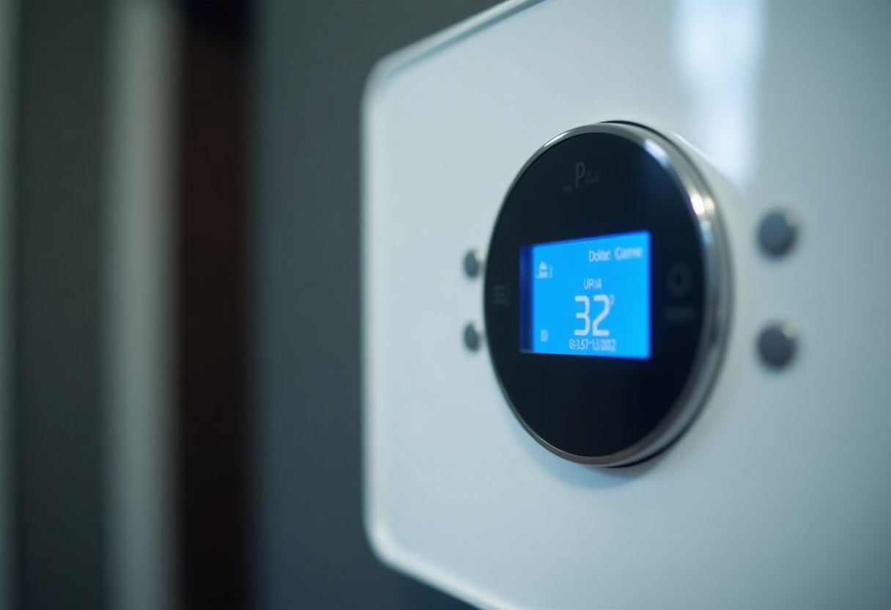
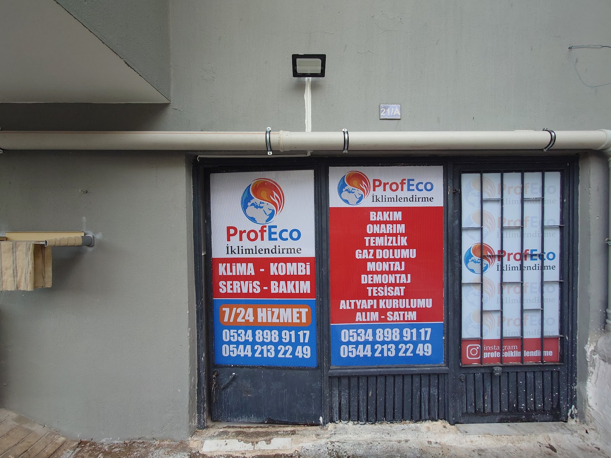
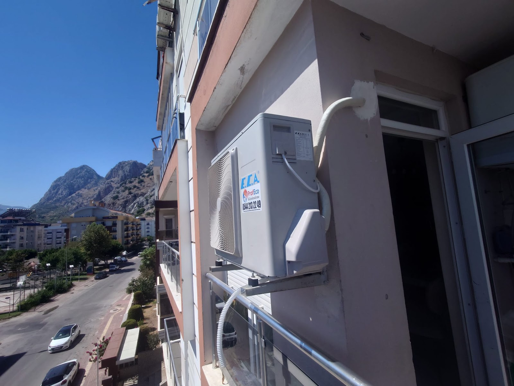
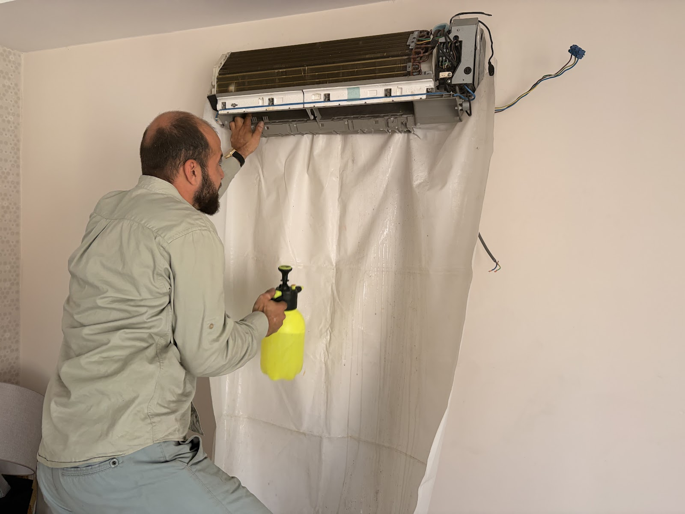
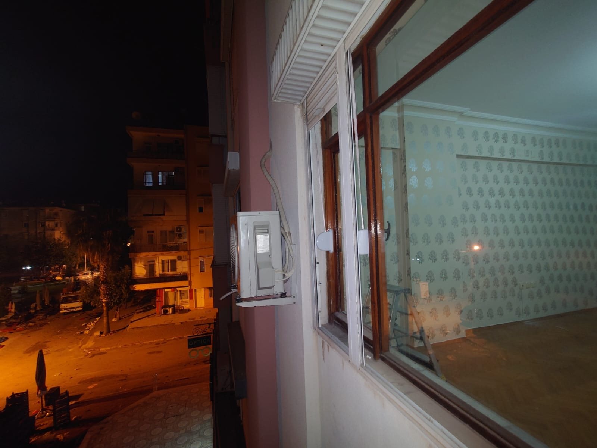

Klimanız Titizlikle Bakılır, Söz Verilen Günde Servis Gelir
Muratpaşa, Antalya'da klima ve kombi servisi veriyoruz. İşimizi temiz, dikkatli ve zamanında yapar, yaptığımız her adımı size anlatırız.
★★★★★ 5 · 151 Google yorumu


Muratpaşa, Antalya'da klima ve kombi servisi veriyoruz. İşimizi temiz, dikkatli ve zamanında yapar, yaptığımız her adımı size anlatırız.

Belirtiyi seçin: evde güvenle yapabileceğiniz adımları, ne zaman usta çağırmanız gerektiğini ve olası nedeni görün. Çözülmezse aynı ekrandan usta çağırın.
Son bakım tarihini ve aylık doğalgaz faturanızı girin; bakım zamanı ve tahmini fazla harcama çıksın. Hatırlatma takviminize düşsün.
Verim kaybı oranı varsayımdır; kendi değerinizi yazabilirsiniz. Kesin durum bakımda ölçülür.
Gün ve saat aralığı seçin. Usta yola çıkınca bildirim gelir; aşağıda örneğini deneyin.
İlçe ve saat seçin; usta ziyaret saatini WhatsApp'tan teyit eder.
Bugünkü örnek servis kaydı
İç ve dış ünite detaylı temizlenir, cihaz kontrol edilir. Klimanız sezona hazır hale gelir.
Soğutmama, çalışmama gibi sorunların nedeni bulunur ve gerekli onarım yapılır.
Yeni klimanızın montajı düzenli ve temiz bir şekilde yapılır.
Muratpaşa ve çevresinde kombi servis talepleriniz için yanınızdayız.
Kombinizin periyodik bakımı yapılır, durumu hakkında bilgi verilir.
Isınmayı etkileyen petek sorunları için temizlik hizmeti sunulur.




Müşterilerimiz zamanında geldiğimizi ve söz verdiğimiz günde sorunu çözdüğümüzü söylüyor.
Klimanız detaylı şekilde temizlenir, çalışma alanı da düzenli bırakılır.
Önder Bey ve ekibi, sohbet ederek yapılan işi ve cihazın durumunu anlatır; sorularınıza sabırla cevap verir.
Bakımsız kalmış, sorunlu klimalarla da her ayrıntıyı tek tek ele alarak uğraşırız.
📍 Altındağ, 153. Sk. No:21/A, 07050 Muratpaşa/Antalya
🕑 Pzt–Paz 24 saat